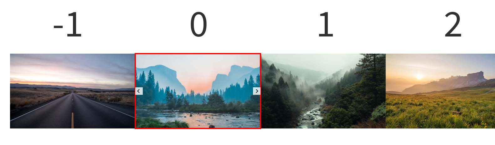

kslider.js
Githubkslider.js
Javascript(ES6) 문법을 사용하여 제작된 이미지 슬라이드 캐러셀 입니다.
사용자 경험을 제공하며 웹 접근성을 고려하여 제작된 kslider.js는
플러그인이나 라이브러리에 의존적이지 않고 독립적으로 사용 가능하도록 제작되었습니다.
사용 언어 : HTML, CSS(Sass), Javascript(ES6)
-
HTML 구성 및 이미지 지연 로딩
HTML
<div id="slider"> <figure> <img src="이미지01 경로" alt="이미지01" /> </figure> <figure> <img src="이미지02 경로" alt="이미지02" /> </figure> . . . </div> <!-- 이미지 지연 로딩 사용 시 마크업 --> <div id="slider"> <figure> <img src="" data-src="이미지01 경로" alt="이미지01" /> </figure> <figure> <img src="" data-src="이미지02 경로" alt="이미지02" /> </figure> . . . </div>kslider.js는 메인 슬라이더와 썸네일 슬라이더, 버튼 등의 마크업을 구성할 필요 없이 이미지 리스트 마크업만으로 DOM 요소를 생성하여 반환합니다.
또한 다량의 슬라이드를 사용할 때 이미지 리소스의 과부하로 페이지의 로딩이 길어질 수 있는 문제점을 고려해
img 태그의 data-src 속성에 이미지 경로를 입력하여 이미지 지연 로딩을 시킬 수 있습니다.
이 경우 웹 성능 최적화를 위해 현재 노출된 슬라이드 이미지와 이전/다음 슬라이드의 이미지만 로드 됩니다. -
전체 옵션
Javascript
kslider({ /* 필수 옵션 */ trigger: '#slider', // 초기화 시킬 노드를 선택 sliderWidth: '100%', // 전체 슬라이더의 width sliderHeight: '400px', // 전체 슬라이더의 height mainSlideWidth: '800px', // 메인 슬라이더의 width /* 아래부터 선택 옵션 */ useThumbnail: false, // 썸네일 슬라이더 사용유무 (기본 값 : true) speed: 500, // 슬라이드 전환 속도 (기본 값 : 500) easing: 'ease', // CSS transition-timing-function (기본 값 : linear) autoPlay: false, // 슬라이드 자동 재생 사용 유무 (기본 값 : true) autoPlaySpeed: 5000, // 슬라이드 자동 재생 간격 (기본 값 : 3000) autoPlayReverse: true, // 슬라이드 자동 재생 방향을 역방향으로 설정 (기본 값 : false) dots: true, // 슬라이더 dots pagination 사용유무 (기본 값 : false) pauseOnHover: false, // 슬라이더에 hover/focus(blur) 시 autoPlay 정지/재생 (기본 값 : true) controlNav: true, // 슬라이더 네비게이션 사용 유무 (기본 값 : false) });사용자의 편의성을 고려하여 슬라이더에 필수적이거나 자주 사용되는 기능을 옵션으로 제공합니다.
필수 옵션과 선택 옵션을 사용하여 슬라이더 CSS 작성을 최소화 시킬 수 있으며 다양한 기능을 제어할 수 있습니다.
* trigger 초기화 시킬 노드를 선택합니다. * sliderWidth 전체 슬라이더의 width를 지정합니다. * sliderHeight 전체 슬라이더의 height를 지정합니다. * mainSlideWidth 메인 슬라이더의 width를 지정합니다. 썸네일 슬라이더의 사이즈는 자동으로 지정됩니다. useThumbnail 썸네일 슬라이더의 사용유무를 정합니다. 기본 값은 true이며 false 일 경우 썸네일 슬라이더 요소는 DOM에 반환 되지 않습니다. speed 슬라이드의 전환 속도를 정합니다. 단위는 ms입니다. easing CSS transition-timing-function 입니다. 기본 값은 linear 입니다. autoPlay 슬라이드 자동 재생 사용유무를 정합니다. 기본값은 true입니다. autoPlaySpeed 슬라이드 자동 재생 간격을 정합니다. 단위는 ms이며 기본 값은 3000입니다. autoPlayReverse 슬라이드 자동 재생 방향을 역방향으로합니다 (우 -> 좌). 기본 값은 false 입니다. dots 슬라이더 dots pagination 사용유무를 정합니다. 기본 값은 false 입니다. pauseOnHover 슬라이더에 hover/focus(blur) 시 슬라이더의 자동 재생이 정지/재생 되도록 합니다. 기본 값은 true 입니다. controlNav 슬라이더 네비게이션 사용 유무를 정합니다. 기본 값은 false입니다. -
필수 옵션으로 초기화

Javascript
kslider({ trigger: '#slider', sliderWidth: '100%', sliderHeight: '400px', mainSlideWidth: '800px', });사용자 편의성을 고려하여 전체 슬라이더와 메인 슬라이더 사이즈의 CSS 작성이 필요하지 않도록
사용자 옵션으로 사이즈 값을 입력 받아 화면에 렌더링 합니다.
sliderWidth, sliderHeight 옵션으로 전체 슬라이더의 width, height를 지정합니다.
mainSlideWidth 옵션으로 메인 슬라이더의 width를 지정하여 초기화 합니다. (썸네일 슬라이더의 width는 자동으로 지정됩니다.)
-
kslider.js 구현 방식
kslider.js가 초기화 되면 document.createElement() 메서드를 이용해 kslider DOM을 생성하여 반환합니다.
kslider DOM이 생성되면 트리거 시킬 노드의 이미지 목록 요소를 insertAdjacentElement() 메서드를 이용해
메인/썸네일 슬라이더에 삽입하고 각 슬라이더에 버튼 요소를 생성합니다.
전체 슬라이더의 DOM 생성이 끝났다면 메인/썸네일의 각 슬라이드의 포지션을 지정하고 이미지를 로드합니다.
진행 순서는 다음과 같습니다.
첫 번째.
메인/썸네일 슬라이더에 삽입된 슬라이드에 사용자 지정 속성 data-index 값을 부여해줍니다.
data-index는 첫 번째 슬라이드를 기준으로 0부터 1씩 증가하며 마지막 슬라이드의 노드는 -1의 값을 부여받습니다.
두 번째.
부여 받은 data-index의 값으로 각 슬라이드의 포지션을 transform 속성으로 지정해줍니다.
left와 margin 같은 CSS 속성을 이용하여 노드의 위치를 정의할 수도 있지만 해당 속성을 사용한다면
슬라이드의 위치를 재정의하는 과정에서 reflow, repaint가 발생하여 브라우저의 렌더링 성능 저하를 일으키기 때문에
CSS 애니메이션 성능 최적화를 위해 reflow와 repaint의 과정이 없는 transform 속성을 사용해 노드의 위치를 정의합니다.
세 번째.
이미지 지연 로딩을 패턴을 사용한다면 data-index 가 -1, 0, 1, 2인 노드는
웹 성능 최적화를 위한 이미지 지연 로딩 함수가 실행되어 data-src 에 입력한 이미지 경로를 src 속성에 추가하여 이미지를 로드합니다.
여기서 썸네일 슬라이더 기준 슬라이드의 개수가 3개 이하일 때 몇 가지 문제점이 발생했습니다.
첫 번째.
슬라이드 개수가 한 개일 때 data-index 값 -1을 부여 받아 화면에 노출되지 않는 문제
두 번째.
슬라이드 개수가 한 개일 때 이전/다음 버튼이 불필요하게 생성되는 문제
세 번째.
슬라이드의 개수가 2개부터 3개일 때 이전/다음 슬라이드 노드가 존재하지 않아 애니메이션이 매끄럽게 동작하지 않는 문제
슬라이더가 매끄럽게 동작하기 위해선 최소 4개 이상의 슬라이드 요소가 필요했습니다.
이를 해결하기 위해 슬라이드 노드의 개수가 1부터 3일 때를 고려하여 케이스를 추가했습니다.
슬라이드 개수가 1개 일때는 data-index를 부여받지 않고 버튼을 생성하지 않도록 data-index 생성 함수와 버튼 생성 함수를 early return 시켰고
슬라이드 개수가 2개 이거나 3개일 때 cloneNode() 메서드를 이용해 슬라이드 노드를 복제하여 슬라이드의 최소 개수가 4개 이상이 되도록 구현 하였습니다.[슬라이드의 개수가 1개일 때]
슬라이드에 data-index 값이 부여되지 않고 이전/다음 버튼이 생성되지 않습니다.
Javascript
kslider({ sliderWidth: '100%', sliderHeight: '400px', mainSlideWidth: '800px', useThumbnail: false, });useThumbnail : false 옵션으로 썸네일 슬라이더를 생성하지 않을 수도 있습니다.
[슬라이드의 개수가 2개 이상 3개 이하일 때]
최소 슬라이드 개수인 4개를 충족 시키기 위해 슬라이드 노드를 복제하여 렌더링 합니다.
[슬라이드 전환]
kslider({ trigger: '#slider', sliderWidth: '100%', sliderHeight: '400px', mainSlideWidth: '800px', speed: 700, easing: 'cubic-bezier(.93,.03,.21,.91)', });kslider.js에서 정의한 moveSlide() 함수는 인자로 문자열 prev, next 값을 받아 슬라이드의 진행 방향을 정할 수 있습니다.
이 값에 따라 슬라이드의 data-index가 1씩 증가하거나 감소하여 각 슬라이드의 위치를 재정의합니다.
이 과정에서 data-index 가 -1, 0, 1, 2 인 노드에 CSS Transition 속성으로 애니메이션 효과를 부여합니다.
슬라이드의 전환 함수와 지속시간은 사용자 편의성을 위해 각 슬라이더 별로 다르게 설정 가능하도록 사용자 옵션을 제공합니다.
슬라이드의 전환 속도는 speed, transition-timing-function 은 easing 옵션으로 설정할 수 있습니다.
슬라이드 data-index 가 재정의 되는 과정에서 값이 -1, 0, 1, 2 인 노드가 이미지 지연 로딩을 사용 중이고 이미지 로딩이 되기 전이라면
data-src의 이미지 경로를 src 속성에 추가하여 이미지를 로드합니다.[버튼 이벤트 바인딩]
생성된 버튼 요소에는 click 이벤트 핸들러가 바인딩 되어 슬라이더를 이전/다음으로 이동시킬 수 있습니다.
하지만 버튼을 이용하여 슬라이더를 조작시 버튼의 중복 클릭으로 인해 moveSlide() 함수가 중첩 호출되어
슬라이드 애니메이션이 종료되기 전에 다음 슬라이드 애니메이션이 실행 되는 문제가 발생했습니다.
버튼의 중복 클릭을 막기위해 비동기 함수 setTimeout()을 이용해 이를 해결했습니다.
먼저 Boolean 형 전역변수 isMove 에 값을 false로 할당하였고 isMove 가 false일 때만 moveSlide() 가 호출 되도록 케이스를 추가했습니다.
슬라이드 애니메이션이 실행됨과 동시에 isMove 에 true를 할당하고 setTimeout() 메서드로 슬라이드의 전환 시간만큼 딜레이를 주어
슬라이드 애니메이션이 종료된 후에 isMove 값을 false로 재할당하여 버튼의 중복 클릭 문제를 해결하였습니다.[슬라이드 자동 재생]
kslider({ trigger: '#slider', sliderWidth: '100%', sliderHeight: '400px', mainSlideWidth: '800px', autoPlaySpeed: 2000, autoPlayReverse: true, });setInterval()와 clearInterval() 타이머 함수를 이용해 슬라이드 자동 재생을 구현했습니다.
Boolean 형 옵션 autoPlay가 true 일 때 슬라이더의 자동 재생이 실행됩니다. 기본 값은 true 입니다.
사용자 경험을 고려하여 슬라이더에 hover/focus(blur) 이벤트가 발생했을 때 슬라이더가 멈춤/재생 될 수 있도록
재생 함수 autoPlayInit() 과 정지 함수 autoPlayStop()를 생성하였고 Boolean 타입 옵션 pauseOnHover 의 값에 따라
슬라이더에 mouseover/mouseleaver/focus/blur 이벤트를 바인딩 하여 슬라이더 자동 재생을 제어할 수 있도록 구현했습니다.
pauseOnHover의 기본 값은 true 입니다.
자동 재생 간격은 기본 값 3000(ms) 이지만 사용자 편의성을 고려해 autoPlaySpeed 으로 간격을 제어할 수 있도록 설정했습니다.
지정된 간격마다 moveSlide('next') 함수가 호출되어 슬라이드됩니다.
autoPlayReverse: true 옵션 이용시 moveSlide() 함수의 인자는 prev로 전달되어 슬라이드 방향을 역방향으로 설정할 수 있습니다.[Dot 인터페이스]
kslider({ trigger: '#slider', sliderWidth: '100%', sliderHeight: '400px', mainSlideWidth: '800px', dots: true, });사용자 경험을 고려하여 총 슬라이드의 개수와 현재 active 상태의 슬라이드의 위치를 직관적으로 나타내기 위해 Dots 인터페이스를 구현했습니다.
총 슬라이더의 개수만큼 dot 버튼을 생성하고 data-index 가 0인 노드(노출 중인 슬라이드)의 순서를 구해
해당 순서에 있는 Dot 버튼에 active 클래스를 추가하여 CSS로 스타일 작성을 했습니다.[컨트롤 네비게이션]
kslider({ trigger: '#slider', sliderWidth: '100%', sliderHeight: '400px', mainSlideWidth: '800px', autoPlaySpeed: 6000, controlNav: true, });웹 접근성을 고려한다면 자동으로 변경되는 콘텐츠는 제어가 가능해야 합니다.
현재 이전/다음 버튼 클릭과 같은 순간의 제어는 가능하지만 슬라이더의 전체적은 기능을 제어할 수 없습니다.
이 부분을 해결하기 위해 정지/재생 버튼을 생성하여 click 이벤트 바인딩 하고 슬라이더의 자동 재생을 제어할 수 있도록 구현했습니다.
초기화 시 생성되는 메인 슬라이더의 버튼과 썸네일 슬라이더의 버튼은 같은 기능을 하는 버튼입니다.
사용자 경험을 고려하여 각 슬라이더 마다 버튼이 생성되는 것이 아닌 재생/정지 버튼과 이전/다음 버튼을 묶어
하나의 네비게이션을 만들어 슬라이더 하단에 제공하도록 인터페이스를 구현했습니다.
또한 자동 재생 전환 진행도를 사용자가 직관적으로 확인할 수 있는 프로그레스 바와
총 슬라이드 개수와 현재 슬라이드 순서를 카운트 해주는 인터페이스를 구현했습니다.